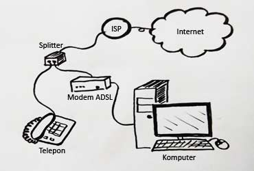

Digital Subscriber Line [DSL]

Pengenalan
Salah satu teknologi kecepatan tinggi yang saat ini banyak didiskusikan Dan banyak mendapat dukungan adalah Digital Subscriber Line (DSL). Teknologi DSL ini menyajikan transmisi data dalam range kecepatan mencapai mega bit perdetik dengan memanfaatkan jaringan telepon yang sudah ada. Kecepatan tinggi dapat di capai denga membagi jalur telepon kedalam lebar pita 4 kHz. Gangguan noise pada jalur, secara dinamik ditentukan oleh jumlah bit per pita frekuensi dan jumlah pita yang dapat digunakan.
Apa Itu Pita Frekuensi?
Adalah pita gelombang mikro dari spektrum elektro magnetik dengan jangkauan antara 18 GHz – 40 GHz
| Nama | Frekuensi | Panjang Gelombang | |
|---|---|---|---|
| Very Low Frequency | VLF | <30 Khz | >10 Km |
| Low Frequncy | LF | 30-300 Khz | 1-10 Km |
| Medium Frequency | MF | 300-300 Khz | 100-1000 Km |
| High Frequency | HF | 30-300 Mhz | 10-100 m |
| Very High Frequency | VHF | 30-300 Mhz | 1-10 m |
| Ultra High Frequency | UHF | 300-3000 Mhz | 10-100 Cm |
| Super High Frequency | SHF | 3-30 Ghz | 1-10 Cm |
| Extremely High Freq | EHF | 30-300 Ghz | 1-10 mm |

Apa Itu DSl?
adalah satu set teknologi yang menyediakan penghantar data digital melewati kabel yang digunakan dalam jarak dekat dari jaringan telepon setempat. Biasanya kecepatan downolad dari DSL berkisar dari 128 kbit/d sampai 24.000 kb/d tergantung dari teknologi DSL tersebut, kecepatan upload sama cepat untuk SDSL.
Banyak teknologi DSL menggunakan sebuah lapisan asynchronous transfer mode agar dapat beradaptasi dengan sejumlah teknologi yang berbeda.
Implementasi DSL dapat menciptakan jembatan jaringan. Dalam konfigurasi jembatan jaringan, kelompok komputer pengguna terhubungkan ke subnet tunggal. Implementasi awal menggunakan DHCP untuk menyediakan detail jaringan seperti alamat IP kepada peralatan pengguna, dengan otentikasi melalui alamat MAC atau memberikan nama host. Kemudian implementasi seringkali menggunakan PPP melalui Ethernet atau asynchronous transfer mode (PPPoE atau PPPoA).

Apa Itu ADSl?
ADSL (Asymmetric Digital Subscribers Line) atau kebalikannya SDSL/DSL (Symmetric Digital Subscribers Line) adalah terminologi suatu penyedia layanan akses internet atau ISP melalui kabel tembaga (kabel telepon). Perbedaannya yang mendasar adalah pada kecepatan download dan upload, atau dengan kata lain kecepatan data dari dan menuju komputer Anda per detiknya.
Apa itu modem ADSL? Modem ADSL merupakan suatu perangkat yang digunakan untuk menghubungkan komputer ataupun router ke saluran telepon sehingga dapat mentransfer data maupun menakses internet. Pada ADSL memiliki berbagai macam jenis kecepatan, USB (Universal Serial Bus), router dan perangkat-perangkat lain yang terdapat di dalamnya. Seperti misalnya ada yang dapat digunakan untuk 2 (dua) komputer dengan menggunakan USB dan ada juga yang dapat digunakan hingga 4 (empat) komputer bahkan lebih dengan menggunkan Ethernet LAN.
Terdapat beberapa lampu indikator pada modem ADSL yang fungsinya untuk mengetahui jalannya proses koneksi yang sedang terjadi. Biasanya lampu yang terdapat pada modem ADSL diantaranya lampu PPP, lampu Power dan lampu DSL. Tapi ada juga lampu tambahan jika menggunakan koneksi Ethernet LAN dan USB. Lampu DSL dapat menunjukan koneksi bahwa sudah sudah terhubung atau belum perangkat pada line telepon dan lampu PPP dapat menunjukan adanya arus data saat melakukan serching.
Adapun hal yang terpenting dalam menggunakan ADSL yaitu IP modem dan kata sandinya (password), kenapa hal ini penting? Karena menyangkut keamanan dari penggunaan layanan untuk konsumen yang diberikan oleh pihak provider. IP menjadi salah satu syarat untuk memasuki jaringan internet, jika ingin menubah kata sandi biasanya perlu memasukannya kembali sesuai dengan perubahan yang dilakukan. Jika semua proses ini berhasil maka akan terhubung ke jaringan internet dengan ADSL.
Kelebihan ADSl
- Memiliki pembagian frekwensi menjadi 2 (dua) macam diantaranya frekwensi tinggi untuk menghantarakna data dan frekwensi rendah untuk menghantarkan suara maupun fax.
- Untuk di Indonesia pelanggan yang menggunakan Spidiy, maka ADSL membuat kegiatan ber-Internet menjadi lebih hemat. Sehingga dapat melakukan akses internet tanpa mengkhawatirkan tagihan yang terlalu mahal.
- Layanan komunikasi antara data dan suara diberikan melalui 2 (dua) kanal yang memang terpisah akan tetapi tetap pada satu kabel yang sama.
- Koneksi ADSL selalu tersambung dengan internet setiap saat dan telepon tetap dapat digunakan kapan saja.
- Dan kecepatan internet yang selalu stabil.
Kekurangan ADSl
- Jarak dapat berpengaruh pada kecepatan pengiriman data. Semakin jauh jarak antara modem dengan komputer atau saluran telepon dengan gardu telepon, maka akan berpengaruh pada kecepatan dalam menakses internet.
- Adanya load coils yang digunakan untuk memberi layanan ke plosok-plosok daerah, sehingga load coils akan menggeser frekwensi suara ke frekwensi yang biasanya digunakan ADSL. Hal ini dapat mengakibatkan terjadinya interfensi maupun ketidak cocokan jalur pada ADSL.
- Adanya bridge tap yang merupakan kabel tidak berada pada jalur langsung antara pelanggan dengan CO. Jadi bridge tap dapat menimbulkan noise yang nantinya dapat mengganggu kinerja dari ADSL.
- Karena seiring berkembangnya jaman penggunaan kabel fiber optik pada saluran telepon digital sudah mulai digunakan. Hal ini tidak sesuai dengan sistem teknologi ADSL yang masih menggunakan saluran analog (kabel tembaga), sehingga pada saat ini masih cukup sulit mengirimkan sinyal melalaui kabel fiber optik.
- Kecepatan koneksi modem ADSL hingga saat ini masih sangat tergantung dengan tiang telepon atau DSLAM dan tidak semua sistem operasi komputer dapat menggunakan ADSL.
Contoh Device ADSl